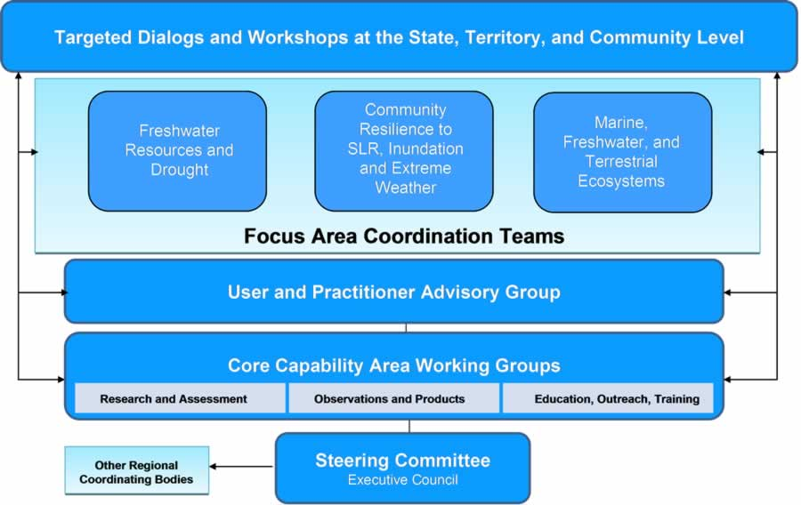

PaCIS Terms of Reference
PaCIS is composed of representatives of regional, national and local institutions and programs in the Pacific, as well as selected individuals from other regions, with experience and expertise in climate observations, science, assessment, education, outreach, users, and services.
Annex A: Permanent Member Agencies, Institutions, Organization, Programs and Specialties
|  |
The PaCIS Climate Services Organizational Architecture.
Annex D: Working Group and Focus Area Coordination Team (FACT) Leads